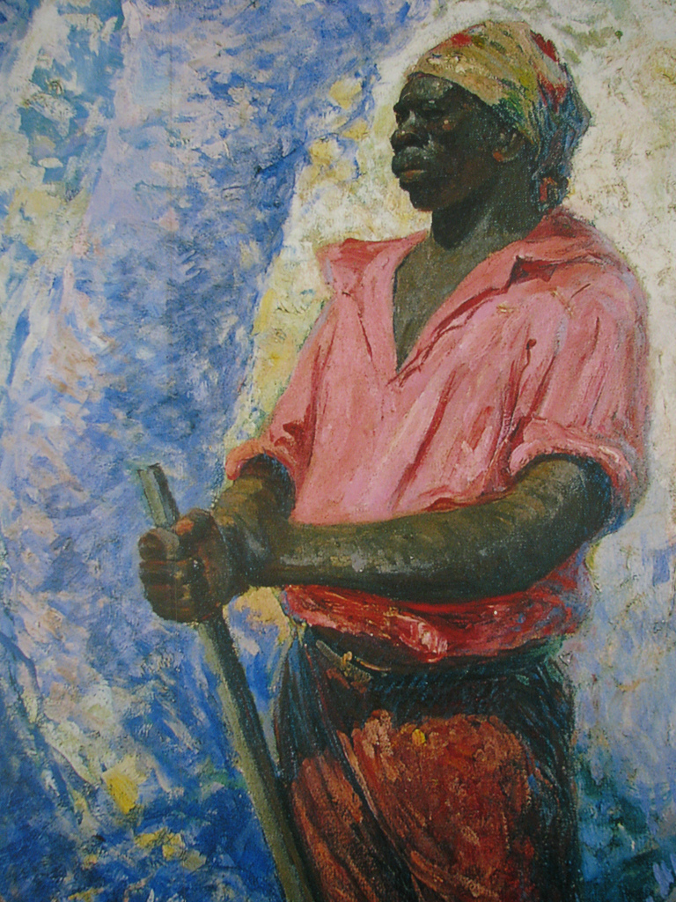
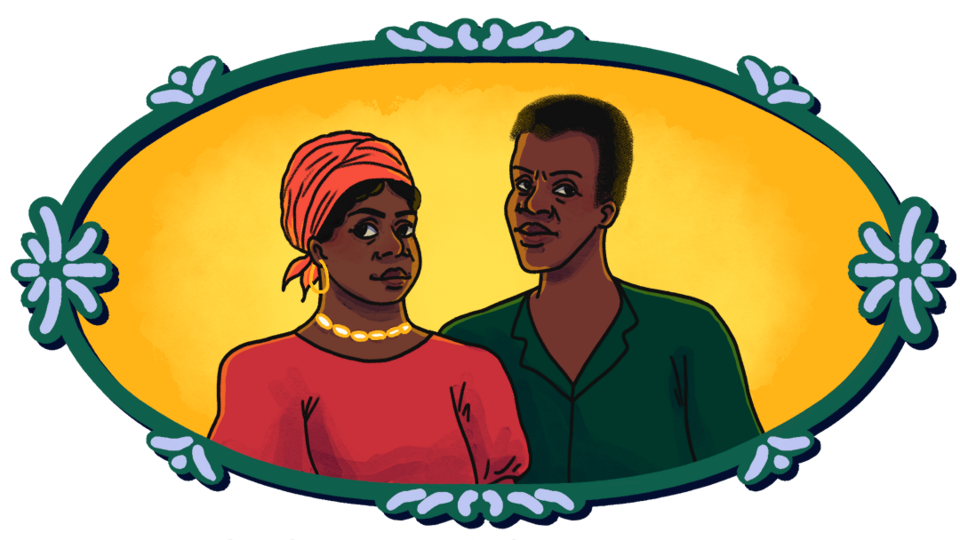
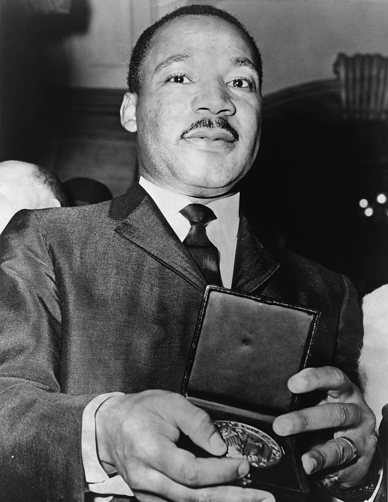
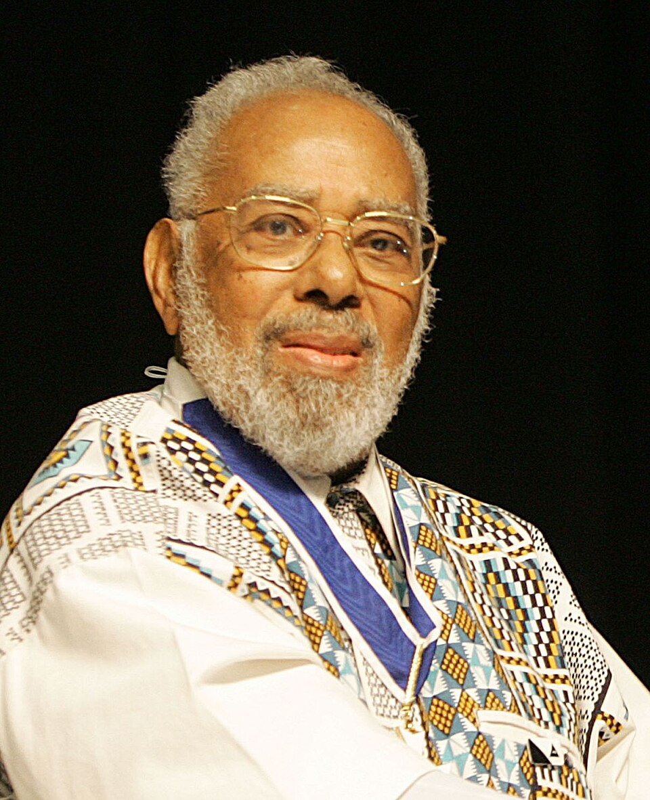
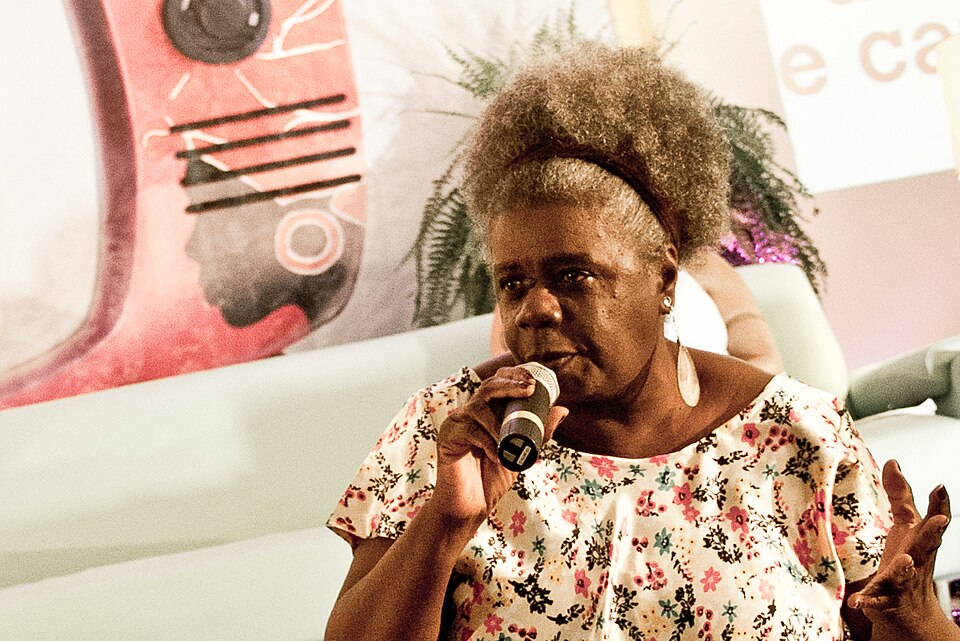

Zumbi dos Palmares
Último líder do Quilombo dos Palmares e símbolo máximo da resistência negra no Brasil.
Pintura: Antônio Parreiras · domínio público
Uma data para lembrar Zumbi dos Palmares, celebrar a herança africana e reafirmar, todos os dias, a luta por igualdade, dignidade e liberdade.
Feriado nacional desde 2023 · Lei 14.759/2023
O 20 de novembro não celebra apenas um dia no calendário. Ele reúne memória, cultura e a luta por justiça que atravessa gerações.
A Consciência Negra é um chamado à memória, ao reconhecimento e à transformação. No Brasil, o 20 de novembro homenageia Zumbi dos Palmares, morto em 1695, símbolo da resistência à escravidão e da luta pela liberdade.
A data celebra a herança africana que atravessa a língua, a música, a culinária, a religião e a identidade do país — e denuncia o racismo que ainda persiste. Falar de consciência negra é falar de história, de cultura e de futuro.
Mais do que uma homenagem, é um convite para ocupar espaços, questionar desigualdades e reconhecer, no cotidiano, o valor de uma história que foi longamente silenciada.
Conhecer a própria história é o primeiro passo para transformar o presente.
Do Quilombo dos Palmares ao feriado nacional: os marcos de uma luta que atravessa séculos e continua viva.
Formado por pessoas escravizadas que fugiam da opressão, Palmares cresceu na Serra da Barriga e se tornou o maior território livre da América Portuguesa.
Após anos de resistência, o líder de Palmares é capturado e executado. Sua memória se torna o símbolo maior da luta negra no Brasil.
Em Porto Alegre, o Grupo Palmares propõe o 20 de novembro como dia de reflexão e homenagem — gesto que se espalha pelo país.
O ensino de história e cultura africana e afro-brasileira passa a ser obrigatório nas escolas brasileiras.
A Lei 12.519/2011 institui oficialmente a data no calendário nacional.
A Lei 14.759/2023 torna o 20 de novembro feriado nacional em todo o Brasil.
Retratos de homens e mulheres que dedicaram a vida à liberdade, à justiça e à valorização da cultura negra.

Último líder do Quilombo dos Palmares e símbolo máximo da resistência negra no Brasil.
Pintura: Antônio Parreiras · domínio público

Lutou pela liberdade e pela autonomia das mulheres negras. Sua história inspira gerações.
Ilustração: EPTrilhas · CC BY 4.0 · não há retrato de época

Liderou a luta contra o apartheid na África do Sul e se tornou o primeiro presidente negro do país.
Foto: Kingkongphoto · CC BY-SA 2.0

Pastor e líder do movimento dos direitos civis nos EUA, defensor da igualdade e da não violência.
Foto: Phil Stanziola · domínio público

Ator, escritor e ativista. Criou o Teatro Experimental do Negro e denunciou o racismo no Brasil.
Foto: Ricardo Stuckert/PR · CC BY 3.0 BR

Uma das principais vozes da literatura afro-brasileira contemporânea, com obras sobre memória e identidade.
Foto: Fora do Eixo · CC BY-SA 2.0
Seis pranchas inspiradas em grafismos afro-brasileiros. Clique em uma imagem para ampliar.
Consciência se constrói com prática. Pequenas atitudes transformam a escola, o trabalho e a comunidade.
Conheça autores, artistas e pensadores negros. Leve essa história para a sala de aula e para a conversa em casa.
Prestigie música, literatura, cinema e arte negra. Consumo consciente também é uma forma de reconhecimento.
Racismo é crime. Saiba reconhecer, apoiar quem sofre e buscar os canais de denúncia, como o Disque 100.
Apoie iniciativas, projetos e negócios liderados por pessoas negras. Representatividade também se constrói com escolhas.
06 — Legado
“Parece sempre impossível até que se faça.”
Nelson Mandela
Que o 20 de novembro não seja apenas um feriado no calendário, mas um lembrete diário de que memória, respeito e representatividade transformam a sociedade. Conhecer a própria história é o primeiro passo para escrever o futuro.
Um trabalho escolar sobre memória, identidade e resistência.
Este site integra o projeto do Colégio Estadual 24 de Outubro, em Aracaju (SE), e foi desenvolvido para o Dia Nacional de Zumbi e da Consciência Negra.
Pesquisa, textos e desenvolvimento: Ayrá Santos, aluno pardo, de ascendência indígena e negra.
O trabalho é escolar e sem fins comerciais. As fontes históricas e legais usadas na pesquisa estão indicadas no rodapé.
— Ayrá Santos
Mosaico do dossiê
1 de 8